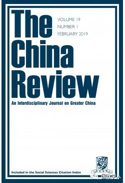
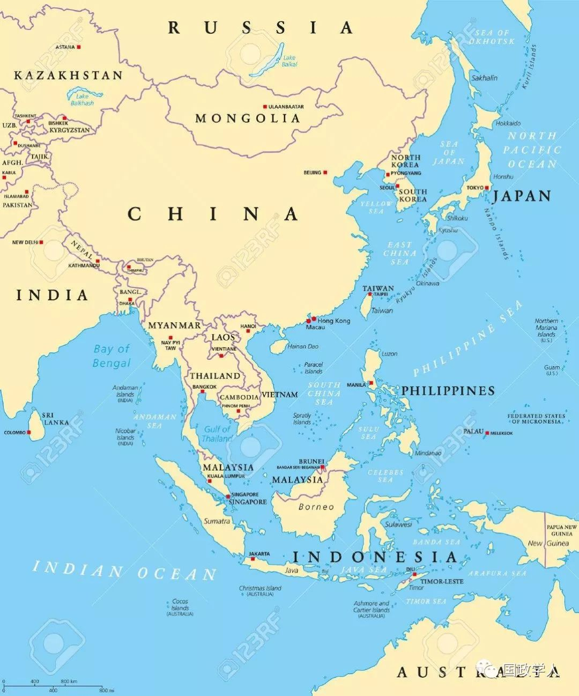

收录于合集

简 介
【 作者 】
Jacques deLisle，法学及政治学教授，宾夕法尼亚大学亚洲法律中心联合主人，外交政策研究所亚洲项目主任。
【 编译 】
袁浩延
【 审校 】
高嘉琳 庞林立
【 来源 】
Jacques deLisle，United States-Taiwan Relations: Tsai’s Presidency and Washington’s Policy，China Review, Volume 18, Number 3, August 2018, pp. 13-60 (Article)
【 期刊简介 】

The China Review,是（香港）中文大学出版社自1990年以来的年度出版物。自2001年以来，每年4月和10月出版两期学术期刊，涵盖大中华区及其人民的各个研究领域，即国内政治和国际关系；社会、商业和经济发展；现代史、艺术和文化研究。这是唯一一本以中国为基地的英文期刊，致力于大中华区的研究。
【 提纲 】
解脱的蔡英文
美国外交政策的有利环境:民主价值观与亚洲支点
运用“策略性模糊”产生明确性
打出特朗普牌
特朗普的头脑仍然清醒吗？
两人结伴，三人不欢
**【声明】
**
本周，国政学人微信公众平台将系统编译SSCI“台湾专题”系列文章。编译目的是 让我们更直观了解境外学者是如何看待和分析台湾问题的，文章观点不代表国政学人观点。
核心观点
随着蔡英文的上台，一些因素预示强有力的美台关系将会延续下去。在美国的两岸政策中，“明确的战略模糊（clarity of strategic ambiguity)”始终存在：华盛顿评估两岸关系时认为，改变现状的一方应该负责，并偏袒另一方。尽管特朗普政府涉台的各项政策方针，都存在不确定性，但以下因素限制了华盛顿对台关系方针的改变：（1）“战略模糊”的持久性；（2）经典的联盟困境：放弃还是诱捕；（3）现实主义的坚持；（4）基于利益的分析：反对在中美敌对期间 “抛弃台湾”；（5）美国外交政策中“价值”压力可能持久存在；（6）中美三个联合公报、《与台湾关系法》(TRA)具有难以撼动的性质；（7）国会在处理美台关系中发挥重要作用；（8）美国在台湾和两岸问题上的政策倾向主要是针对大陆和台湾的选择而作出反应。作者还阐述了当前美国对台政策中的四点特征：（1）凸显民主价值观；（2）“战略模糊”逐渐明确；（3）美台关系性质的变革不可能或不可行；（4）三方互动及美国的被动选择政策。

文章导读
** 解脱的蔡英文**
蔡的胜选和上台与积极的美台关系相一致。她也表示，希望维持两岸的和平关系，且不会效仿前总统陈水扁的政策。华盛顿方面认为，蔡英文的表述符合她所说的支持马英九时代以来两岸关系的稳定和连续。于美国而言，马英九时期与大陆的接触进行得太快，损害了美国在台湾的利益。而随着马英九两届任期内关于政治问题、主权或两岸和平协议的谈判预期破裂，这种担忧有所减弱，但蔡英文的胜选更能缓解美国对于两岸关系消长的疑虑。
** ** 美国外交政策的有利环境：民主价值观与亚洲支点****
蔡英文的胜选以及和平过渡的持续，略微提升了台湾在美国外交政策中的地位。在蔡英文上台前，奥巴马政府对亚洲的“转向”或“再平衡”总体上有益于美台关系的积极发展；且此政策意味美国安全政策更加泛亚洲化，对纯粹双边关系的关注有所减少。这对台湾与美国的安全关系也相对有利，部分原因是将台湾更全面地纳入地区安全框架，可能会降低美国正式安全条约关系和较不正式关系间的显著区别。
“战略模糊”的明确化
在美国的“战略模糊”政策中，关键且明确的内容之一是主张保持积极的美台关系。尽管没有确切措辞表达，但美国的政策实际上是对两岸关系中的危机或潜在的严重问题进行判断，并(在不同程度上)支持其认为没有错的一方。
蔡英文上台后，随着两岸关系朝着所谓的总体“冷和平”、局部“冷对抗”方向恶化，美国认为北京是错的。在公认的美国政策方针中，要求采取相对“亲台”的姿态，从而延续马政府时期形成的积极双边关系。美国就蔡英文2016年竞选纲领、就职演说和她任职总统前期行为的评估认为，她已做出充分承诺，寻求两岸关系的连续性、稳定性与和平，并以足够的清晰度和可信承诺放弃挑衅性的“亲独立”举措。
中国大陆方面则担心蔡英文和民进党政府正在追求“软性”独立，如蔡英文利用一些举措重返“去中国化”相关的议程，破坏台湾的中国意识等。根据中国大陆台湾政策圈经常表达的观点，美国的错误在于没有意识到蔡英文行动中的固有威胁，认同蔡英文回避更公开或更正式的独立行动的做法。蔡英文上台后，北京方面许多针对台湾的政策举措都强化了美国的说法，即北京对两岸关系的低迷负有主要责任。北京方面有时也试图发出善意的信号，但其修辞和政策汇编中的不同因素加在一起，并没有足够理由改变蔡英文胜选后美国对两岸关系的评估，大量来自美国政府的声明将两岸关系恶化的责任归咎于北京。
打出“特朗普牌”
特朗普的言论和行动为美台关系的前景带来更大的不确定性。特朗普2016年12月与蔡英文的电话提出了新政府将预示台湾在美国外交政策中地位的前景；且特朗普进一步加大了对台支持，似乎将其新生的台湾政策与他认为涉及美中利益冲突的议题联系起来。特朗普上台后的事态发展似乎更有利于台湾，而且在许多方面暗示了政策的连续性。美国在台协会主席詹姆斯·莫里亚蒂形容蔡英文对北京的态度务实创新，并认为北京有责任改善两岸关系在国防上安全关系的变化也有类似的发展趋势。
特朗普政府对东亚安全问题的态度多变且矛盾，增加了许多方面的不确定性。特朗普奉行“美国第一”的外交政策，这预示着美国对台湾的安全承诺可能会受到严重侵蚀。美台关系的不确定性可能会在一定程度上持续，并且情况较过去更加严重。在特朗普时代，政策波动是特朗普政府的主要缺陷、特征；其次，特朗普政府在外交政策上采取高度交易的方式；第三，制度多元化是特朗普对台政策制定的特征。
特朗普的头脑仍然清醒吗？
美国对海峡两岸问题的“战略模糊”政策确实包含明显的模糊性——华盛顿的“一个中国政策”没有完全明晰或固定，既不容易定义，就如何评估联盟动态、平衡价值观和利益，或者在多大程度上与中国接触、对冲亦充满了内部紧张和矛盾。尽管如此，美国在台湾关系和两岸关系政策上的整体稳定和一致性已经延续了数十年，根深蒂固的政策立场、结构特征和长远的趋势交织在一起，预示着美台关系的连续性：
首先，美国政策的一个关键不变因素是模糊战略的明晰，包括华盛顿在两岸关系出现问题时发布事实上的过错判断，并相应调整美国与台北和北京的接触，如美国的“一个中国政策”；其次，对华盛顿来说，美台关系的放弃、诱捕的联盟困境。特朗普执政期间，诱捕/放弃困境的结构将继续存在，并继续限制美国的选择；第三，美国外交政策思维中的现实主义因素强调狭义的安全利益和对硬实力的担忧，这通常不利于与台湾的牢固关系；第四，注重“价值观”的美国外交政策思维，与强调国内政治制度类型差异作为外交关系中突出因素的国际关系理论相一致，这在总体上支撑并可能继续支撑美国与台湾的更紧密关系；第五，美国对台政策可能的稳定也源于美国官员一贯宣称忠于两岸问题的“神圣文本”——中美三个联合公报、《与台湾关系法》，以及存在争议的里根对台“六项保证”；最后，美国法律和政治的基本制度特征进一步巩固了美国既定的对台政策，从而支持了美台关系的基本连续性。
在特朗普的领导下，共和党对总统和国会两院的控制似乎不太可能降低国会对台湾支持的程度和显著性。即使特朗普反对台湾政策的连续性，在国会与政府关系紧张、国会对特朗普处理外交政策的许多方面明显不信任的情况下，国会似乎也相对有可能坚持其传统角色。《与台湾关系法》和中美三个联合公报极不利于美台关系的彻底改变。因此，特朗普治下的变革不太可能甚至不可行。
两人结伴，三人不欢
华盛顿对台政策和对两岸关系的政策在很大程度上是对台北和北京所做选择的反应，而且可能会越来越倾向于此，呈现明显的被动姿态。中国大陆相对实力的显著上升，以及台湾民主的不断巩固和成熟，强化和深化了美国政策的反应性角色。另外，由于政府明显缺乏战略指导，特朗普的外交政策还增加了被动反应的倾向。美台关系的未来，将在很大程度上取决于两岸政策制定者的决定。两岸的政策选择与华盛顿的反应，将在很大程度上决定美台关系自2008年以来的轨迹。
扫描下方小程序码查看原文p df
本文由国政学人微信公众平台编译首发
更多阅读
国政学人 （ID：guozhengxueren)
为方便学人及时阅读高质量文章
别忘把国政学人设置 星标 哦~


国政学人
支持学术公益与知识传播
微信扫一扫赞赏作者 __赞赏
已喜欢，对作者说句悄悄话
取消 __
发送给作者
发送
最多40字，当前共字
上一页 1/3 下一页
长按二维码向我转账
支持学术公益与知识传播
受苹果公司新规定影响，微信 iOS 版的赞赏功能被关闭，可通过二维码转账支持公众号。